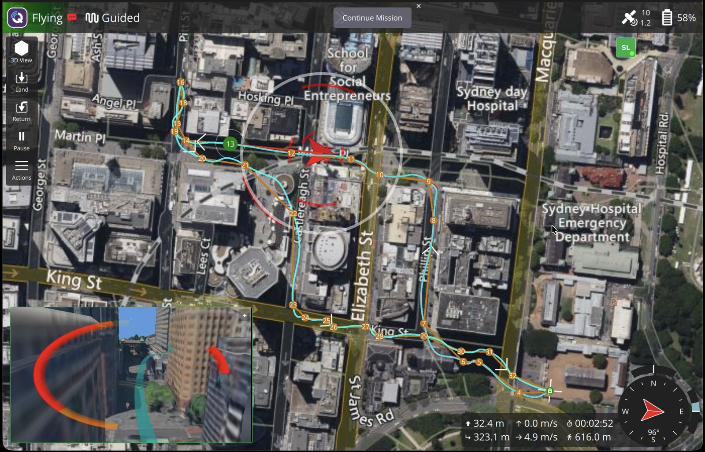
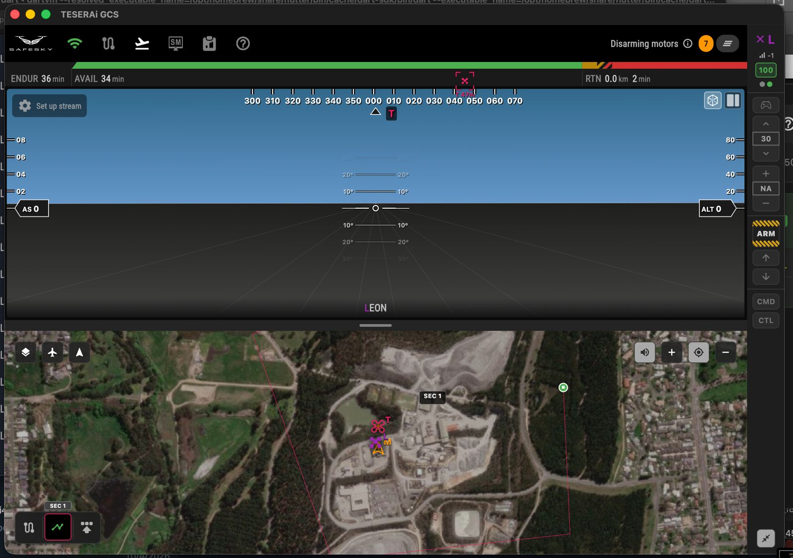
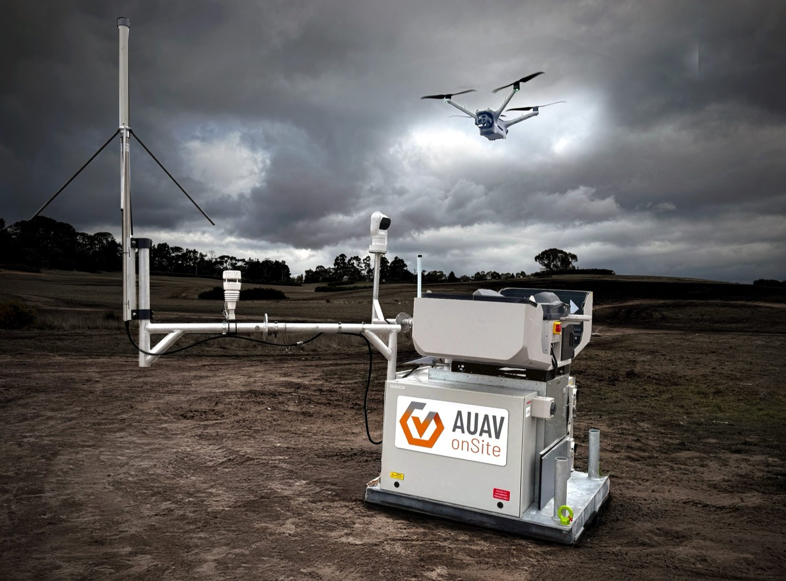
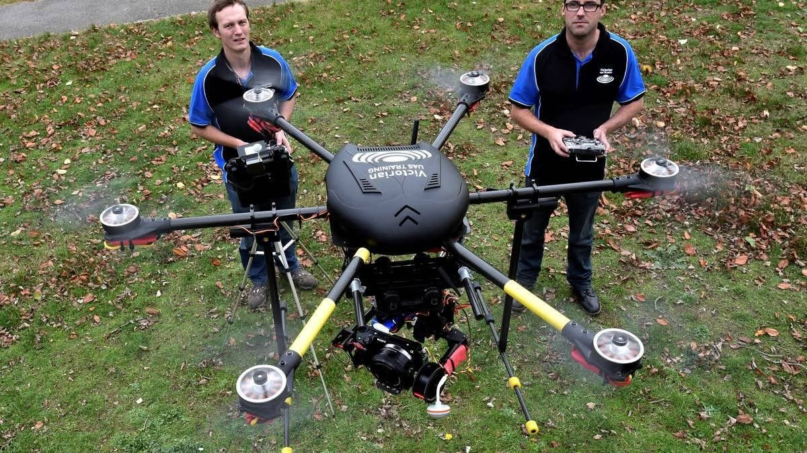

Platforms, systems, and custom engineering.
Balliyang — Synthetic LiDAR Obstacle Avoidance

A novel obstacle avoidance system that ray-casts through pre-loaded 3D mesh models and sends MAVLink OBSTACLE_DISTANCE (msg 330) to the flight controller — providing LiDAR-equivalent spatial awareness without physical sensors.
BVH-accelerated ray casting engine with WGS84/ECEF coordinate transforms. Ingests glTF 2.0 models with Draco decompression, enabling direct use of Google 3D Tiles as terrain and obstacle data. Custom QGroundControl plugin for mesh management and real-time visualization.
Runs as a companion daemon on Raspberry Pi 5, communicating via UART to a Cube Orange flight controller. Flight tested May 2026.
SafeSky GCS — Custom Ground Control Station

Full ground control station built from scratch with a custom MAVLink v1/v2 parser. Features include mission planning, geofencing, multi-vehicle fleet management, RTSP video streaming (SIYI SDK integration), joystick control, ADS-B traffic awareness, and voice control.
Supports Serial, TCP, UDP, and USB OTG communications with automatic link failover. AES-256-GCM parameter encryption backed by STM32H7 hardware cryptographic acceleration.
Cross-platform deployment: iOS, Android, macOS, Windows, and Linux.
VTRX — VTOL Fixed-Wing UAS

12.2 kg, 3 m wingspan VTOL fixed-wing aircraft with 90-minute endurance and 50 km range. Features hot-swappable flight control surfaces and Picatinny rail payload mounting for rapid mission reconfiguration.
ARK FMU V6X flight controller with MAD V505S 320KV motors. Automated OpenFOAM CFD pipeline for aerodynamic optimisation, validated against 29+ flight logs. Propulsion iteration across 3 motor/prop combinations to maximise efficiency.
AUAV onSite — “Drone in a Box”

Service module for the DJI Dock 3, engineered for remote and offshore deployment. Integrates redundant power (PV/Battery/Generator), failover data connectivity (5G LTE/Satellite/Ethernet), weather stations, CCTV, ADS-B receivers, and remote VHF radio.
CASA ROB BVLOS acceptance achieved November 2025.
ForestMapper — Mapping Fixed-Wing

Rugged foam flying wing with 1.6 m wingspan, designed for high-volume aerial mapping. 13–19 m/s cruise speed with 80-minute endurance. Single and dual camera payload configurations for RGB and multispectral capture.
Over 1,000 hours of production flight time across forestry, agriculture, and environmental survey campaigns.
CinneeShot — Cinema Heavy-Lift

Heavy-lift octocopter purpose-built for Red Epic cinema camera operations. Dual-operator control — pilot and camera operator — with redundant power systems, dual GPS, and autonomous flight modes.
Developed in collaboration with Philip Rowes and Andrew Tridgell from the ArduPilot development team.
Open source and autonomous scripting.
Open Source Contributions
Active contributor to two of the most widely used open-source flight stack projects:
- ArduPilot (C++) — BendyRuler 3D obstacle avoidance, guided-mode OA path planner
- QGroundControl — Ground control station contributions
ArduPilot Lua Scripting
4,000+ lines of custom Lua scripts for autonomous mission operations:
- Autonomous VTOL soft-landing with rangefinder descent control
- One-button-launch with dynamic mission generation
- Ballistic payload delivery with real-time wind estimation
- In-flight security sanitisation